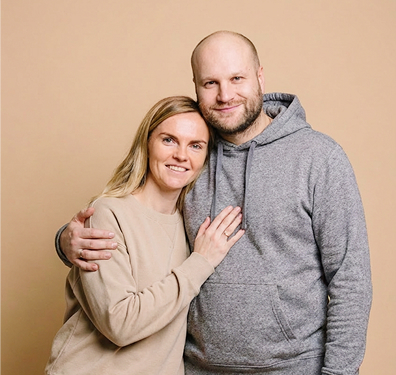
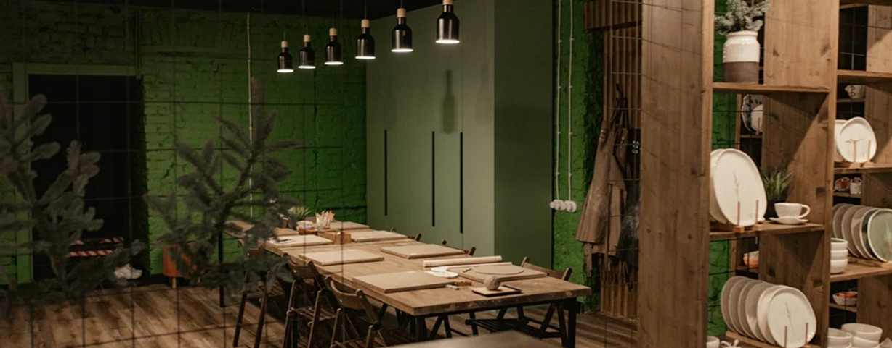
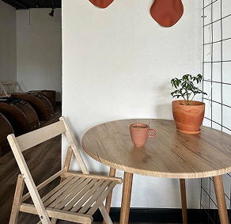
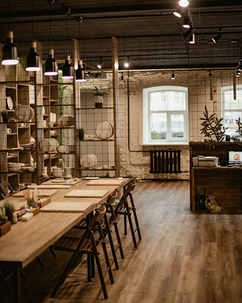
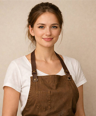
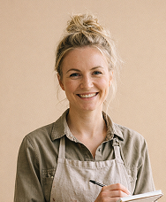
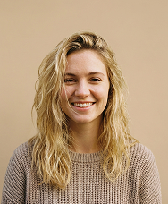
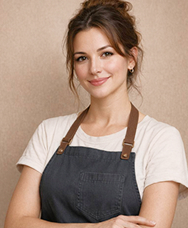
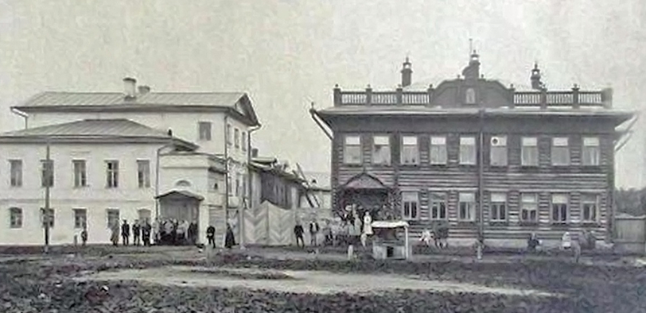
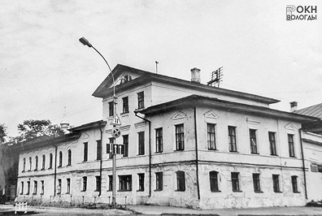

Лазарева Ирина и Лазарев Александр
Основатели и владельцы мастерской
Добро пожаловать в нашу семейную гончаную мастерскую — место, где глина оживает в ваших руках, а творчество становится отдыхом для души.


Наша история началась в 2017 году с маленькой мастерской площадью всего 28 квадратных метров. Мы создали её вместе с мужем — из любви к гончарному делу и желания делиться этим ощущением с другими.

В 2024 году мы переехали в красивое здание в центре города в 3 минутах от Софийского собора. Постепенно мастерская выросла в узнаваемый бренд: наши мастер-классы нашли своих гостей, а керамику начали заказывать рестораны Вологды, Москвы и Санкт-Петербурга.

Основатели и владельцы мастерской

Мастер

Ведущий керамист

Администратор

Мастер

В 1825–1828 годах купец Фёдор Дмитриевич Филипов построил двухэтажный каменный особняк с мезонином.
В 1861 году к западу от дома, построенного Ф.Д. Филиповым, мещанином Игнатием Филипповичем Эдель был построен ещё один каменный двухэтажный дом эклектичной архитектуры.

К 1872 году оба дома перешли во владение купеческой семьи Козловых и в 1908 году были соединены между собой каменной вставкой в два окна.
С 1916 года в здании на Торговой площади размещалось Вологодское общество сельского хозяйства (ВОСХ), созданное в 1908 году.
В 1991 году дом был отреставрирован по проекту архитектора Г.Г. Щапина и приобрёл статус памятника архитектуры регионального значения. Сейчас здесь размещаются частные организации, в том числе и наша гончарная студия.